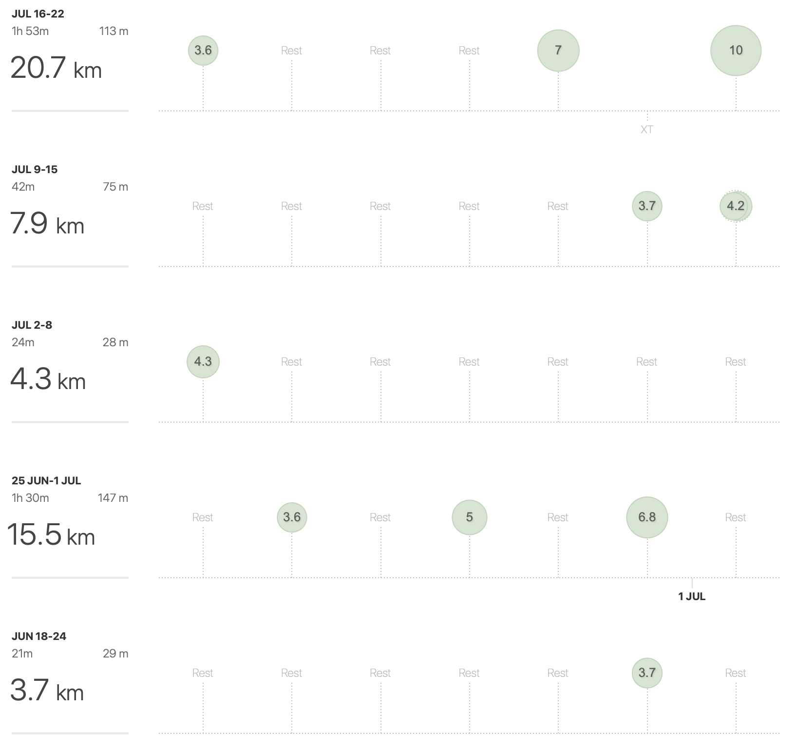
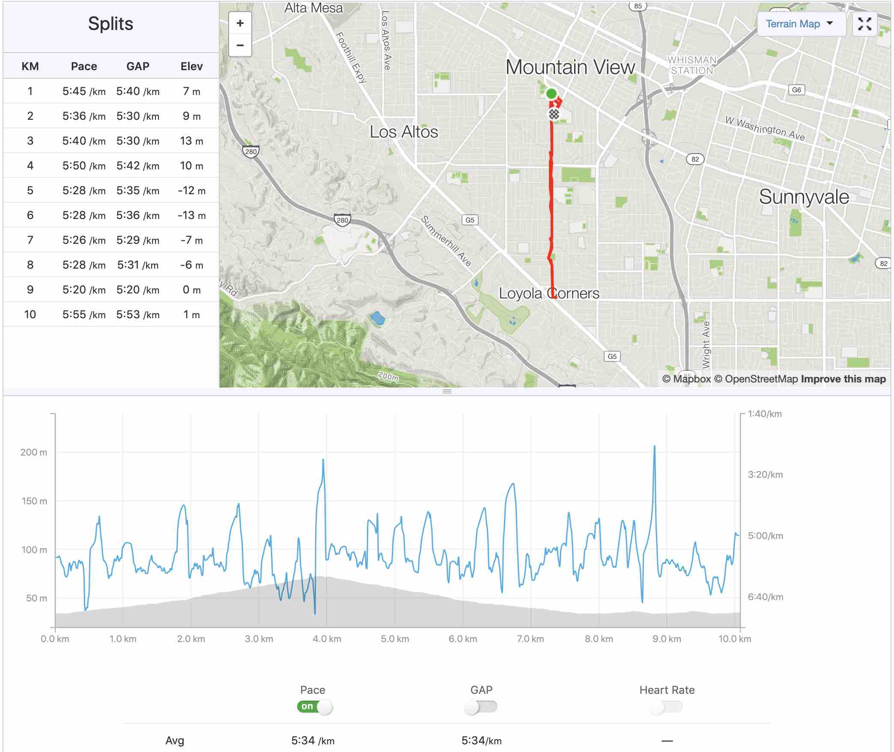

Before The Start a.k.a. The Bear Beginning
A doubtful analogy
My first weeks of running could actually be resumed by a simple analogy: It is like making love to a bear… (figuratively speaking, of course…).
Figuratively speaking, for sure. But, somehow, the side effects look surprisingly similar:
- Dizziness. It is indeed not so hard to imagine that one of the making love to a bear effects is dizziness…
Pretty obvious right?…
- And actually, if you do not breath enough while running - which, trust me, will happen - you will get really dizzy!
- Dehydration. It is indeed not so hard to imagine that one of the making love to a bear effects is dehydration…
Pretty obvious right?…
- And actually, if you do not drink enough before the run, during the run, or after the run - which, trust me, will happen - You will get really dehydrated!
- Pain Localized in the Lower Part of The Body. It is indeed not so hard to imagine that one of the making love to a bear effects is pain localized in the lower body parts…
Pretty obvious right?…
- And actually, while starting to run, you will stimulate, in a not so gentle way, muscles, tendons, and ligaments localized in the lower part of your body… And they will let you know that they do not like it at all! Which, trust me, will happen.
- Scars. It is indeed not so hard to imagine that one of the making love to a bear effects is getting scars…
Pretty obvious right?…
- And actually, if you do not lift your feet high enough you will trip, fall down, and smash the ground! Which, trust me, will happen.
A conclusion
You may then ask, why not just stopping?
Good question! Well, first, the making love to a bear side effects disappear, and, second, it is really fun!
Running log
I prefer to warn you, it will not be impressive!
 The number in the green circles represent the distance runned in a day (in km not in miles!). Not very impressive right? But it is actually okay, there will be a lot room for improvement!
First 10k ever
And I finished my first 5 weeks of running by doing a 10k!

I was pretty happy about that! I wanted now to share this crazy news with my friends in France. And, precisely, I was going to visit them 2 weeks later. I was looking forward to it, they were apparently pretty enthusiastic about a restaurant, and most specifically its dessert menu…
Thinking about how the Killer BaBa Night turned out… Something went definitively wrong! I just wanted to brag a bit about running my first 10km (6.2miles) in less than 1h, which is, by the way, not that impressive… And now I signed up for a half-marathon (21.1km - 13.1miles) with guys running it in less that 1h45…
Really?!
Conclusion
It was now time to prepare for the half, and simply run more, the next post post describes how it went…